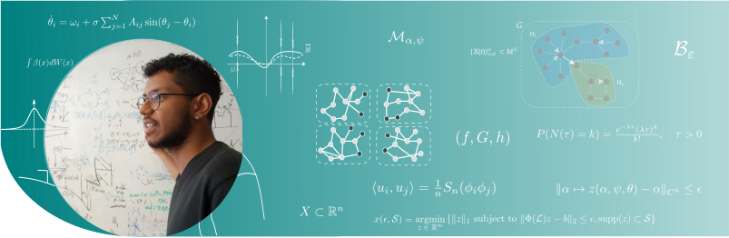

Department of Electrical and Computer Engineering
Clarkson Center for Complex Systems Science
Clarkson University
Potsdam, NY - USA
eroquedo[at]clarkson[dot]edu
Google Scholar profile
Github
ORCID
CV
My research vision lies in the intersection of dynamical systems, ergodic theory, and data science to learn complex network dynamics from time series data.
More specifically, I have been interested in:
-- Extracting the governing equations that mathematically describe the complex system's time evolution from data.
-- Describing emerging collective phenomena such as synchronization, cluster synchronization and chimera states.
Robust reconstruction of sparse network dynamics
with Tiago Pereira, and Sebastian van Strien (2023).
We put forward a new rigorous approach called Ergodic Basis Pursuit (EBP) that gives theoretical bound for
the minimum length of time series to detect uniquely the interaction structure from multivariate time series.
Check out below my talk at Fourth Symposium on Machine Learning and Dynamical Systems (2024).
Quantifying protocols for safe school activities
with Juliano Genari, Guilherme Tegoni Goedert, Sérgio H. A. Lira, et al.
PLoS ONE 17(9) (2022).
Chimera states through invariant manifold theory
with Jaap Eldering, Jeroen Lamb and Tiago Pereira
Nonlinearity 34-5344, 2021